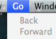
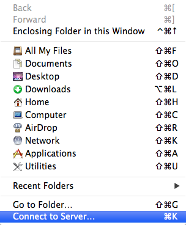
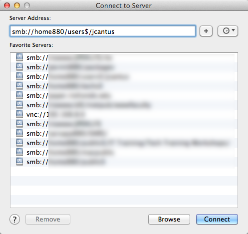

Rio Hondo College
Information Technology Services


How To:
Connect to a Network Shared Folder with Mac OS X
Your campus Macintosh machine is able to connect to campus resources using your network ID and password.
To connect to a networked share drive such as your "H drive" (the home folder) or the "P drive" (the public folders) your Mac must be connected to the campus network in one of two ways.
- Connected to the Rio-Secure wireless network
- Connected to a wired ethernet port on campus
From the Finder, select Go in the Menu bar.

Select Connect to Server…

Enter the address of the network share

Windows network shares use the Server Message Block protocol and therefore begin with
smb://
followed by the name of the server you are connecting to.
smb://home880/users$/jfaculty